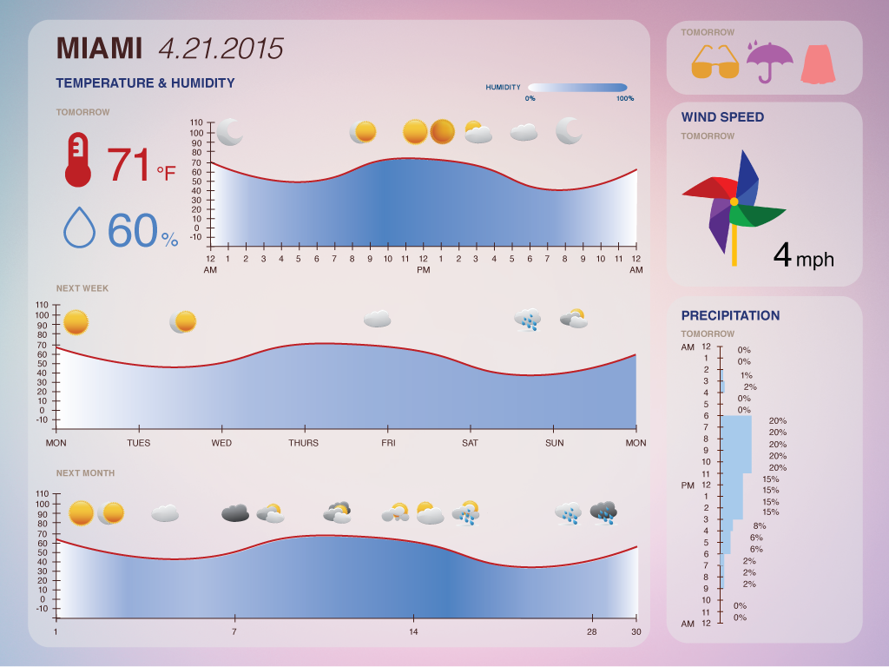
These icons can be used to represent different weather conditions. Instead of presenting to user in words about the forecast, the icon is intuitive for the user to figure out the weather condition with just a glance.
Rather than having a hard number as the wind speed, I’ve decided to use an animated windmill so the user gets a clearer idea about the relative wind speed.
These are also intended to be animated. For example, if it will be rainy outside tomorrow, the umbrella icon will light up, indicating that the user should bring an umbrella tomorrow, while the other icons will be dulled. The same principle applies to the other icons.
1.
2. 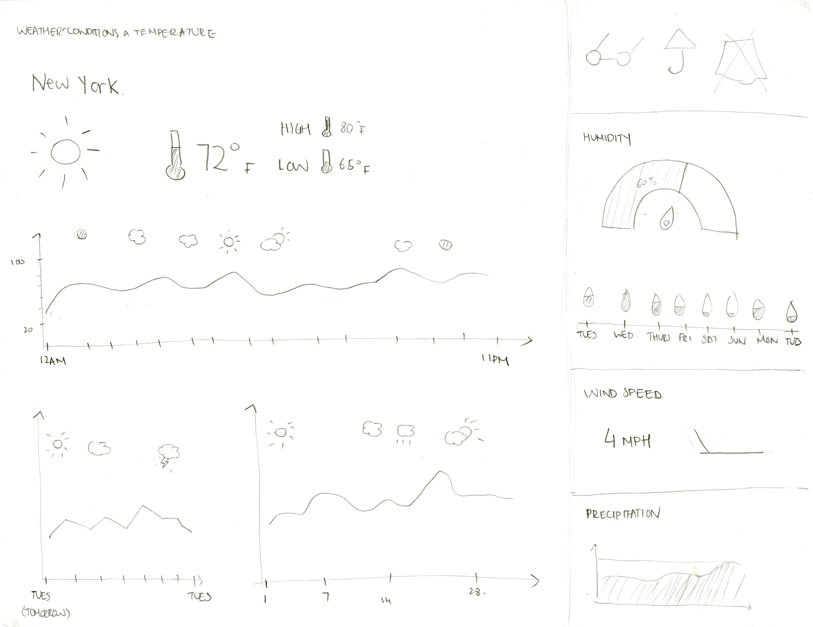
3. 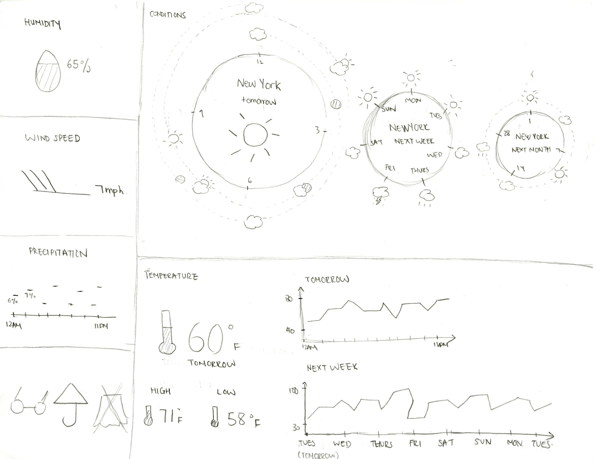
4.
5. 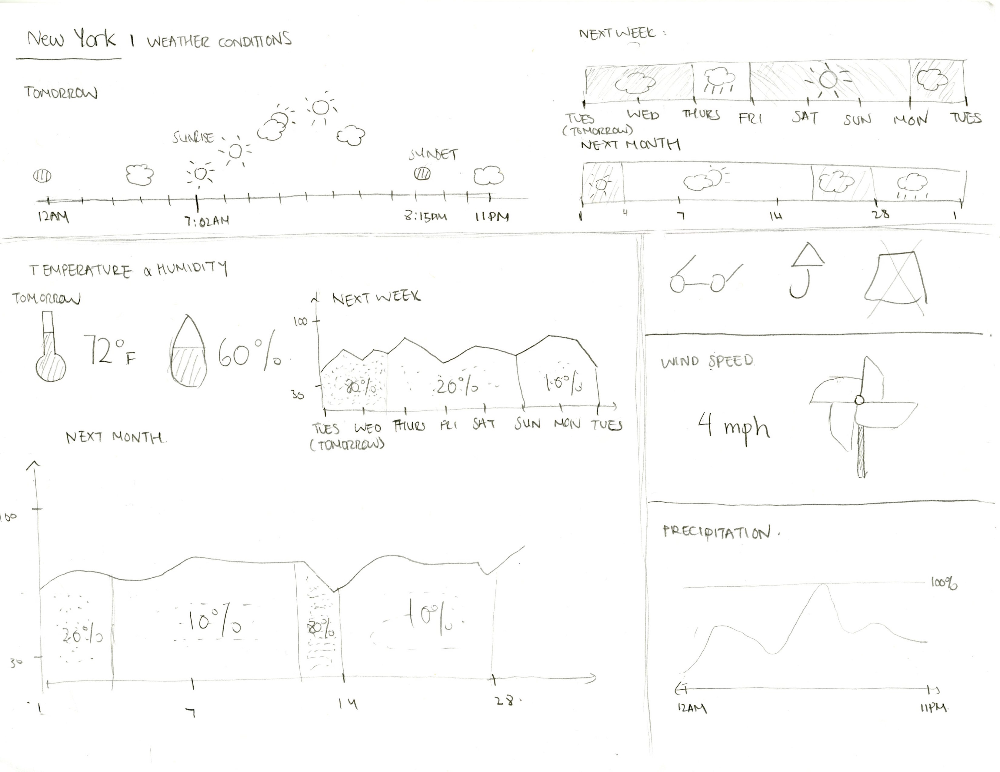
6. 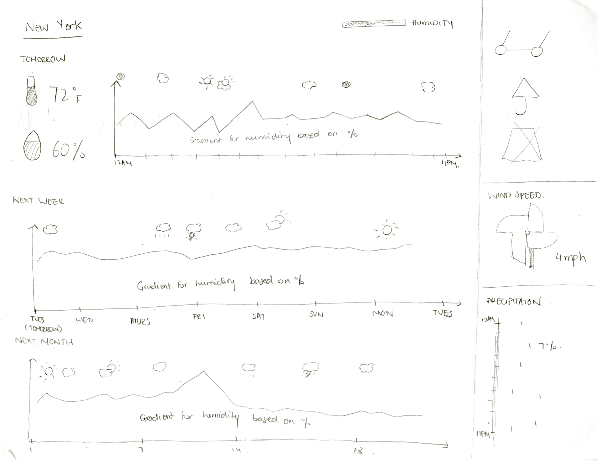
Based on feedback, I've decided to go ahead with sketch 6.
{kind=link}
Project Description
In my Information Design class, we were tasked to create a weather dashboard for an audience of our choice that can be displayed on an iPad. The dashboard needs to include weather predictions for the upcoming day, week, and month. For my audience, I chose travelers who need to decide what to wear and pack for their trip.Research
After doing some research, I identified the important factors for a traveler to be:- Weather Condition
- Temperature
- Humidity
- Wind Speed
- Precipitation
Design Process
Given the relatively small screen size, fitting so much data on the dashboard was challenging. After doing some analysis on existing dashboard, I concluded that icons are a powerful way to represent data - it saves space, looks elegant, and is easy to understand.
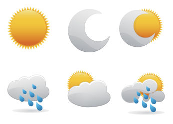
These icons can be used to represent different weather conditions. Instead of presenting to user in words about the forecast, the icon is intuitive for the user to figure out the weather condition with just a glance.
Rather than having a hard number as the wind speed, I’ve decided to use an animated windmill so the user gets a clearer idea about the relative wind speed.
These are also intended to be animated. For example, if it will be rainy outside tomorrow, the umbrella icon will light up, indicating that the user should bring an umbrella tomorrow, while the other icons will be dulled. The same principle applies to the other icons.
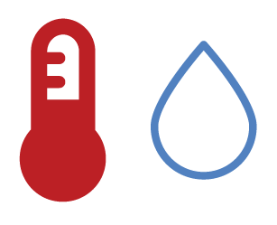
These are also intended to be animated. For example, if it will be rainy outside tomorrow, the umbrella icon will light up, indicating that the user should bring an umbrella tomorrow, while the other icons will be dulled. The same principle applies to the other icons.
Initial Sketches
These initial sketches explored different ideas of representing the weather related information.1.
2. 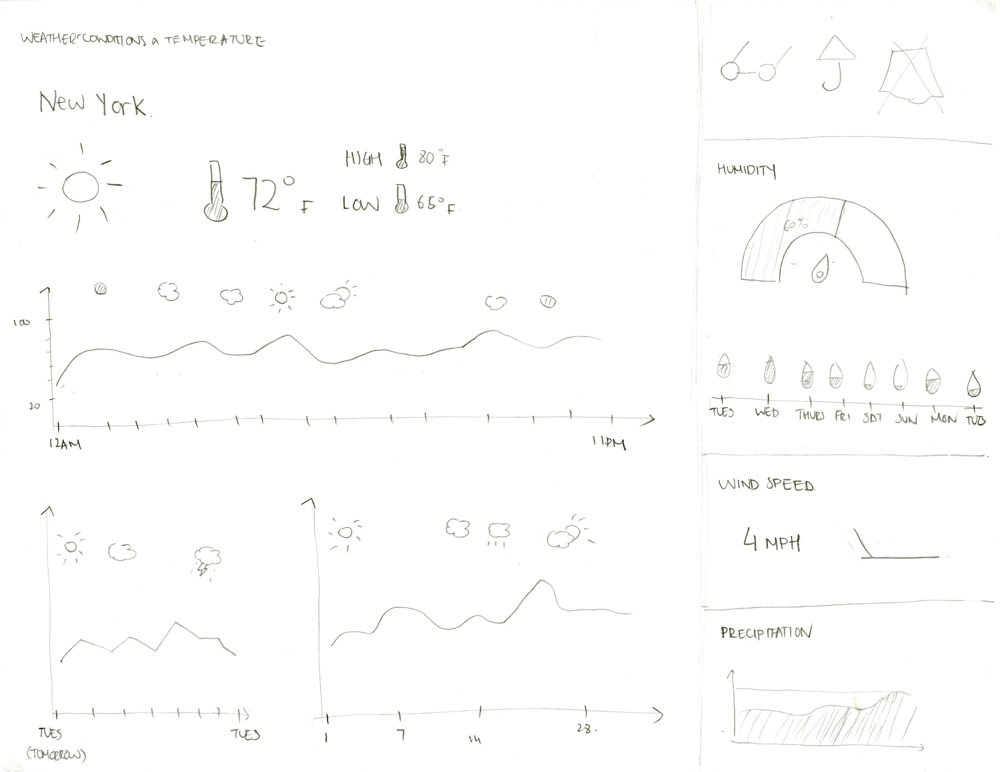
3. 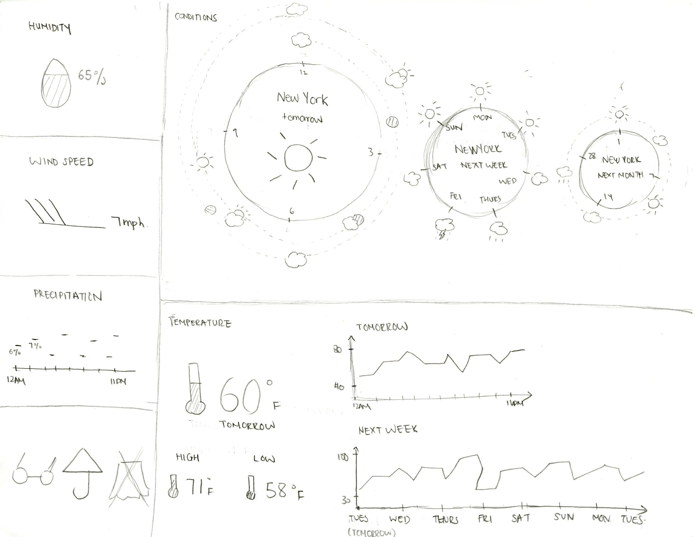
4.
5. 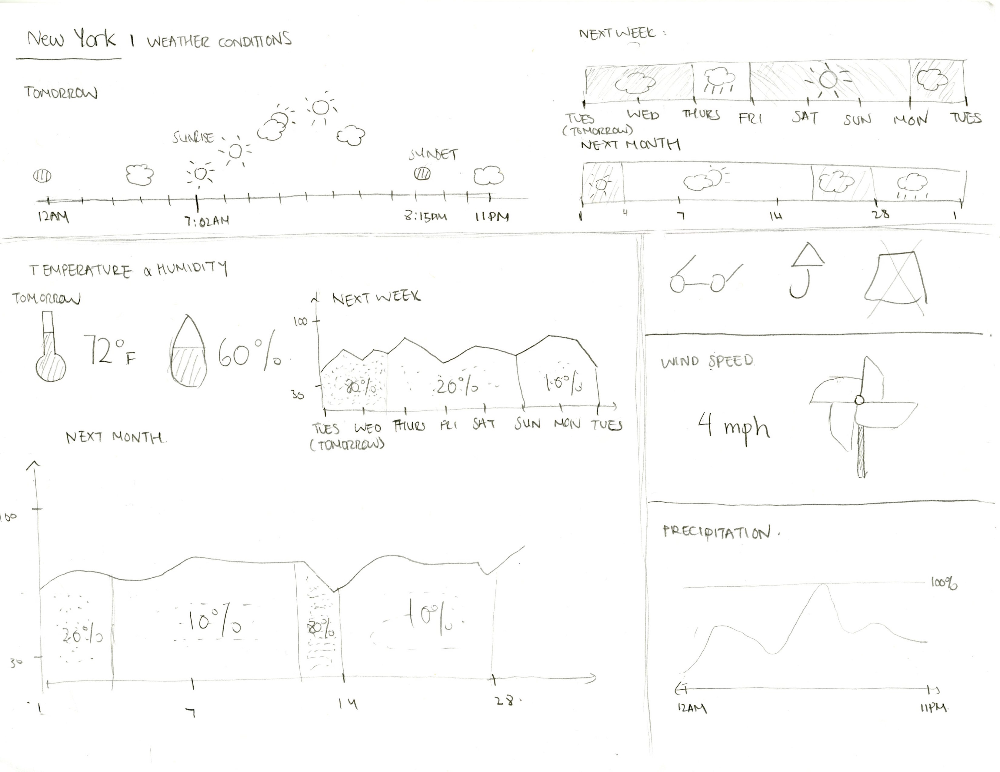
6. 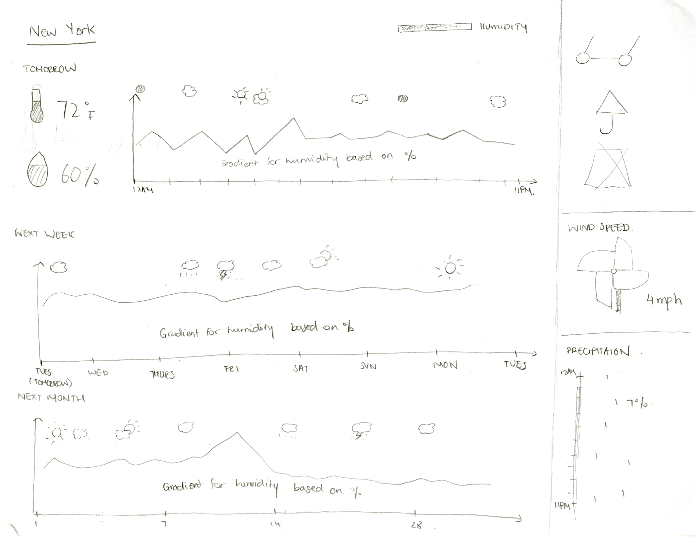
Based on feedback, I've decided to go ahead with sketch 6.